背景与调研
龙湖古寨不是靠流量催生的网红地：明清时期它是韩江下游的重要商埠， 曾聚居 72 个姓氏，有「三街六巷」的骨架和一座中国罕见的女性祠堂阿婆祠。 问题是，这些内容大多停在了规划文本里。
2012 年，龙湖古寨被列入中国传统村落名录，保护范围 72.01 公顷。 此后传播环境经历了三个阶段：政府主导（官网与规划文本，面向行政与专业人员）、 文旅企业主导（OTA 线路把古寨压缩成「潮州一日游」里停留 1–1.5 小时的一站）、 个体数字媒体主导（小红书、抖音把古寨拆成一个个可拍摄的局部场景）。
2026 年电影《给阿嬷的情书》在这取景，平台立刻以「影视同款机位」组织内容， 游客循着推荐抵达——拍下的仍是算法筛选过的古寨。 三个阶段合起来，是一条文化解释权不断转移的线索： 可见性递增，可理解性停滞。
调研用四种方法交叉验证：125 条小红书笔记与 428 条相关评论、 142 条大众点评评论、222 份游客问卷（分到访前预期与现场体验两卷）、 6 份实地观察记录，以及 11 组编号访谈（居民、经营者、游客、民俗活动参与者）。
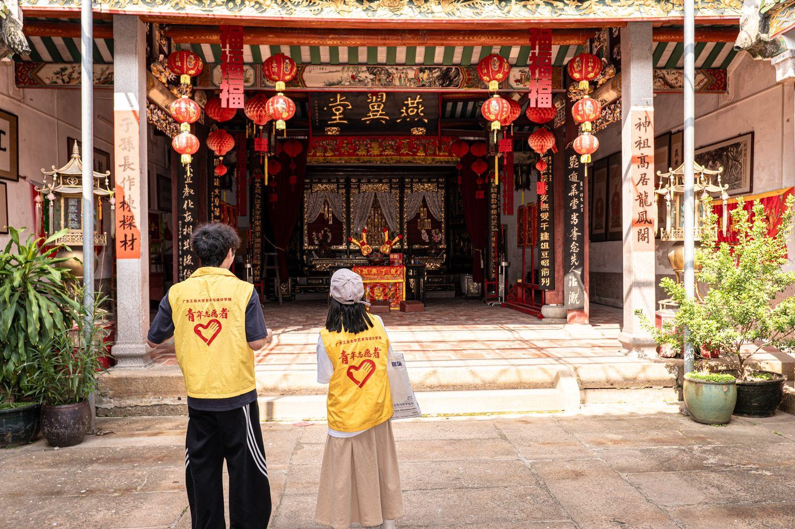
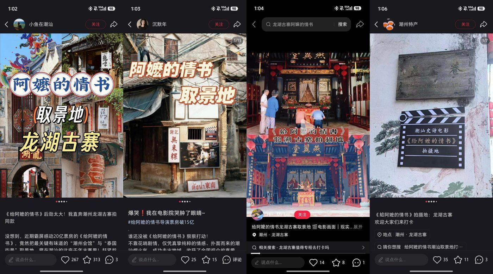
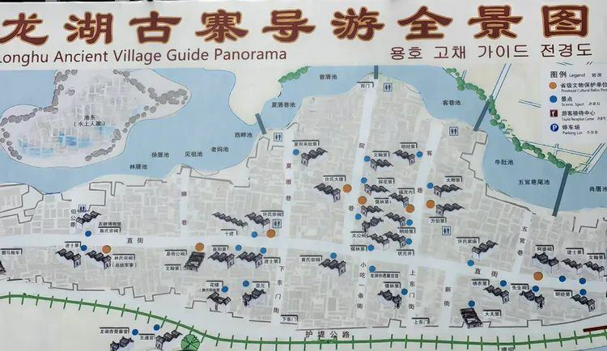
痛点
游客进入古寨后，文化意义不是一次性丢失，而是沿着「被看见—被读懂—被参与」三个层次逐层衰减。 每往下一层，被卡住的人数变少，衰减程度却更深。
第一层·未被感知。超过六成游客表示「不知道在看什么」，真正能沉浸其中的不足两成。 原因有二：三街六巷中实际可游览的仅主街，祠堂门楼并非全部开放；多数游客依赖现场文字铭牌， 而铭牌普遍褪色、数量不足、位置不明显，超过两成游客没有主动获取任何历史信息。
第二层·未被理解。五级量表显示，游客对古建筑观赏价值的评分明显高于对文化内涵的理解评分。 路径短、停留短，读不完一块碑；平台内容展示的是仪式与民俗的「过程」，现场留下的却只有静态建筑外壳。
第三层·未被需要。想进一步参与的人找不到入口：节点未开放、无人可问、活动时间不明确。 居民掌握的地方知识难以进入公众表达，游客也失去了核对信息、通过实践理解文化的机会。
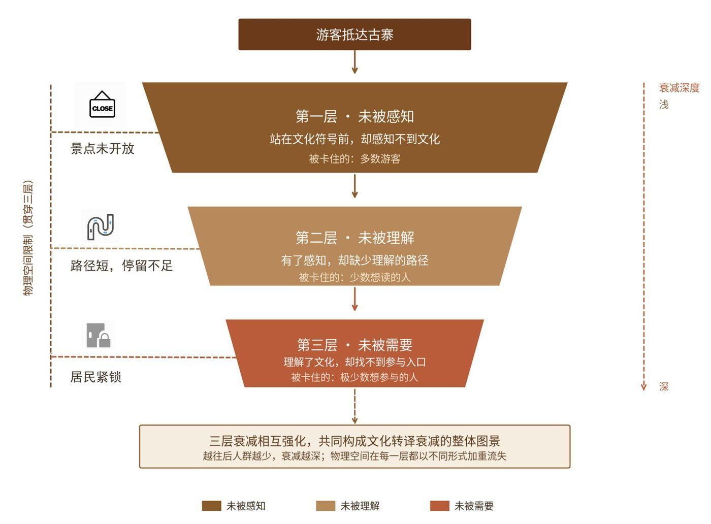
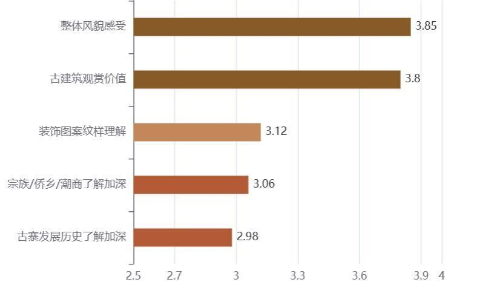
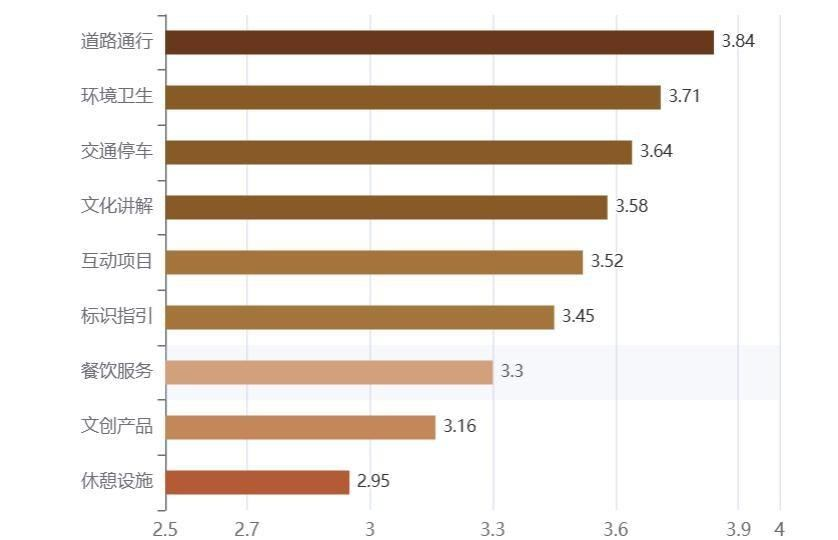
核心概念
报告提出并界定了「文化转译衰减」——在地文化转化为平台影像、再进入游客认知与现场体验的过程中， 部分原有意义发生简化、替代或遗漏。它并不预设数字传播必然降低文化价值。
这个概念由三条理论线索支撑：媒介化说明媒介逻辑会筛选进入公共传播的内容； 编码—解码说明受众最终理解的意义取决于解码，而非编码者意图； 文化折扣则提示跨语境传播必然伴随意义损耗。
与之配套的两个判断尺度是可见性与可理解性。 可见性关注内容进入公众视野的程度，可理解性关注游客能否结合背景信息， 理解建筑、人物、历史与地方生活之间的联系。古寨的困境正是二者的背离。
第三个概念是数字文化权利。依据联合国经社文权利委员会第 21 号一般性意见 与教科文组织相关公约，地方文化主体应享有三项权利： 文化阐释权（由谁解释文化）、数字叙事权（由谁讲述文化）、 数据权益（数字资源的权属与收益如何分配）。
这三个概念后来直接长成了治理框架的四个端点，也是整份报告从「诊断」走向「开方」的接缝。
治理框架
四端治理构成一条完整链条：从「谁来讲」到「怎么传」，到「怎么读懂」，再到「有没有读懂」。 对应主体端、平台端、现场端、评估端。
保障居民的数字文化权利
村委会可联合运营方建立口述授权库：采集时说明用途、公开范围与署名方式，经居民确认后使用； 商业用途另行约定报酬或收益分配，不愿公开的信息保留不传播空间。
完善平台注解，连接传播与体验
为商埠、宗族、侨乡等主题设计统一标签，使高语境内容可被算法识别与用户检索； 争取文化类内容推荐位；把扫码量、触达率、推荐页曝光纳入监测。
完善叙事路径，提升文化解释
依托古街、宗祠、民居组织商埠、宗族、侨乡主题游线，让节点之间能够互相解释； 导游与居民讲述者参与路线内容核对，让「出片」的地点同时成为「读懂」的入口。
建立可理解性评估与反馈机制
把「有没有读懂」纳入游客评价与运营考核，使文化阐释不足能够被识别， 而不是等到差评出现才被动回应。
研究产出
一份 44 页的调查报告，加上完整附录：问卷设计、观察记录表、访谈提纲与编号材料。 所有结论都能回溯到具体数据。
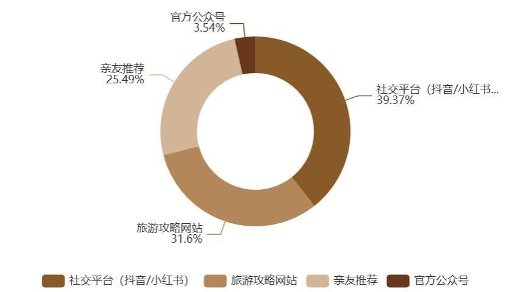

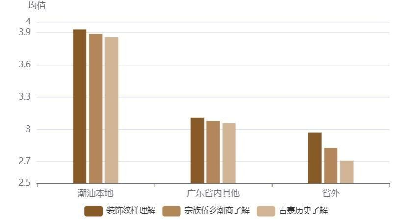
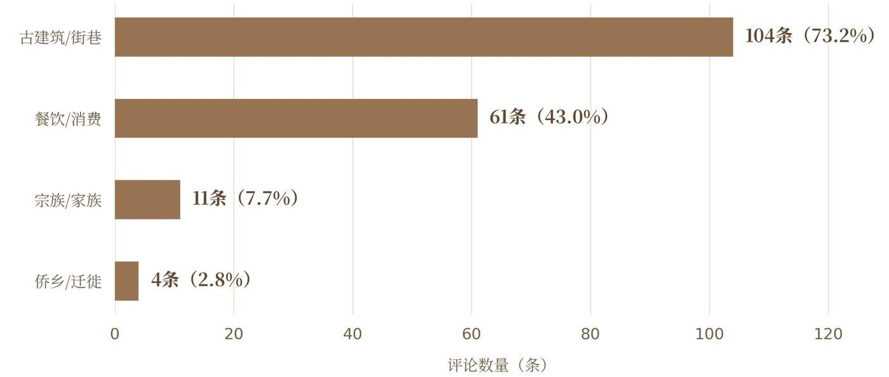
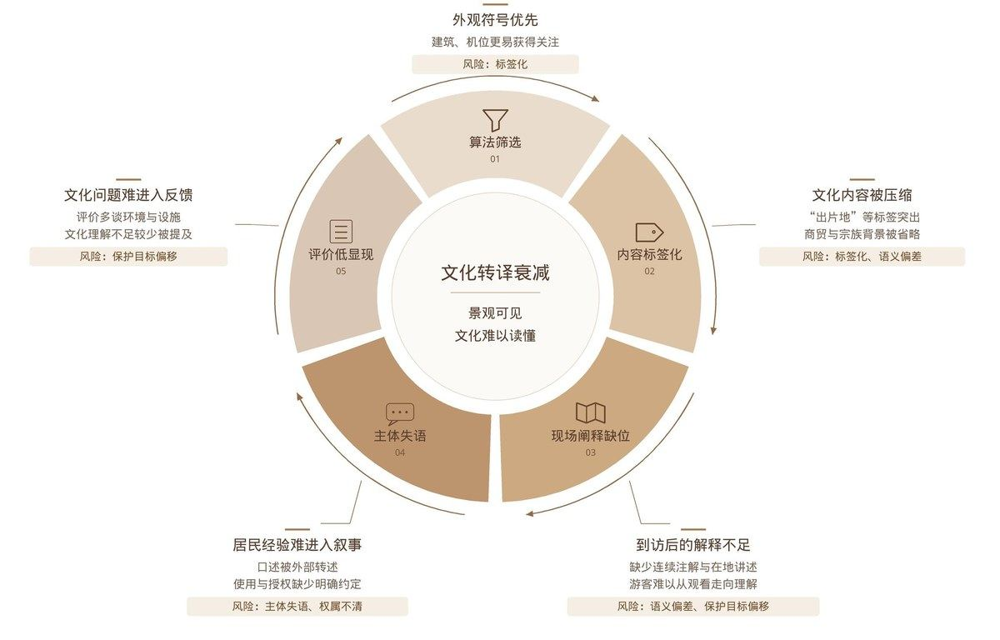
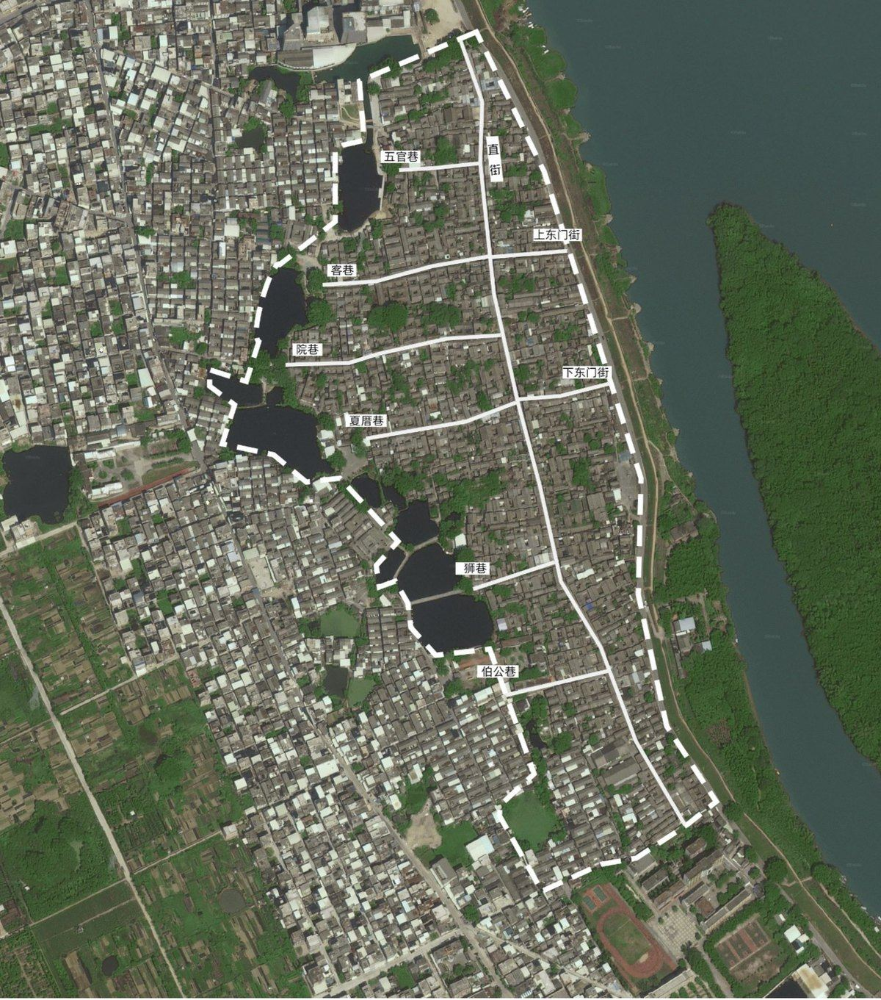
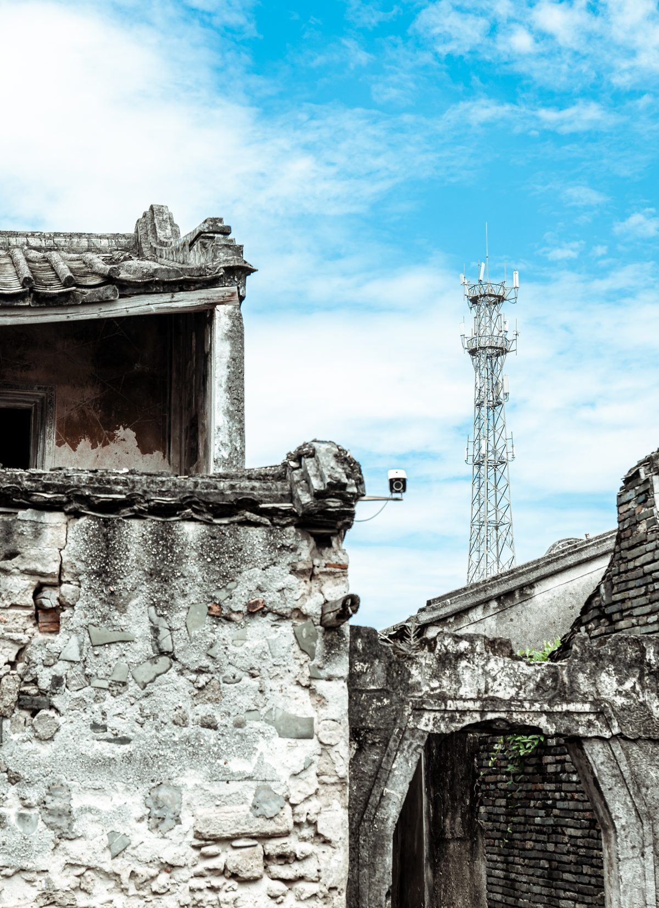
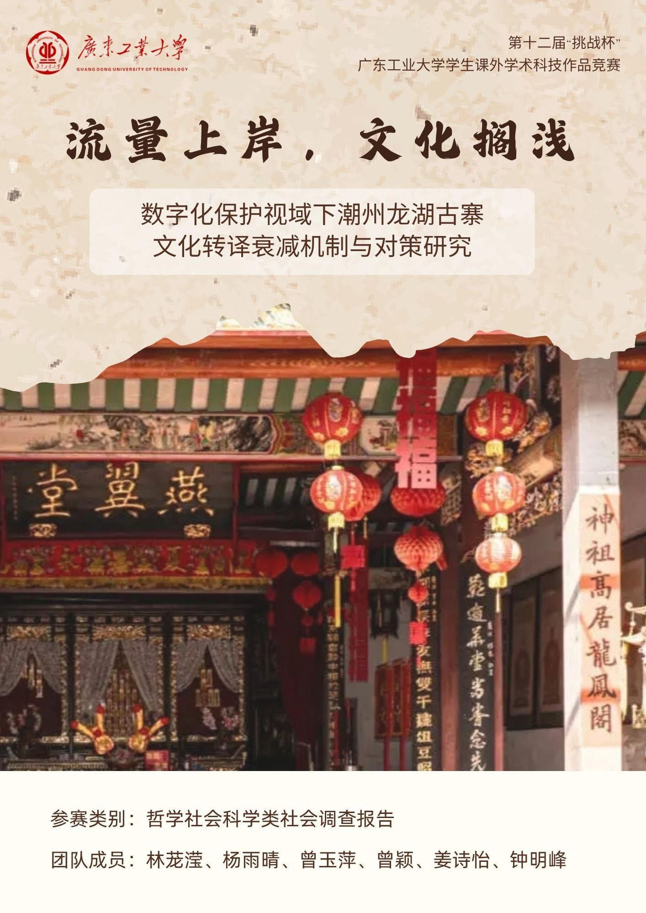
成果
这份报告的价值不在于给古寨一个结论，而在于提供了一套可以复用的诊断路径： 过程—影响—治理，可迁移到其他同样面临「流量进入、意义流失」的传统村落。
第十二届「挑战杯」
广东工业大学学生课外学术科技作品竞赛
哲学社会科学类社会调查报告 · 已提交参赛
多源数据交叉验证
平台文本 + 问卷 + 实地观察 + 深度访谈，四类证据互相校验
可迁移的分析模板
「过程—影响—治理」框架可复用于同类传统村落的数字化保护评估
我在这份研究里做了什么。
参与问卷设计与现场发放，完成现场观察记录与部分访谈协助； 承担小红书笔记与评论的采集、清洗与主题编码； 参与文化转译衰减三层结构的归纳，以及部分章节撰写与图表整理。
我对这份研究的理解。
它让我意识到，「被看见」和「被理解」之间隔着的不是技术， 而是一整套愿不愿意投入的解释工作。 后来做竹海项目时，我一直在问自己同一句话：游客走到这个节点，究竟读懂了什么。